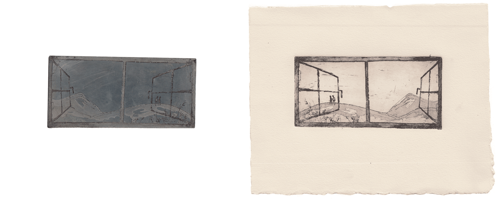
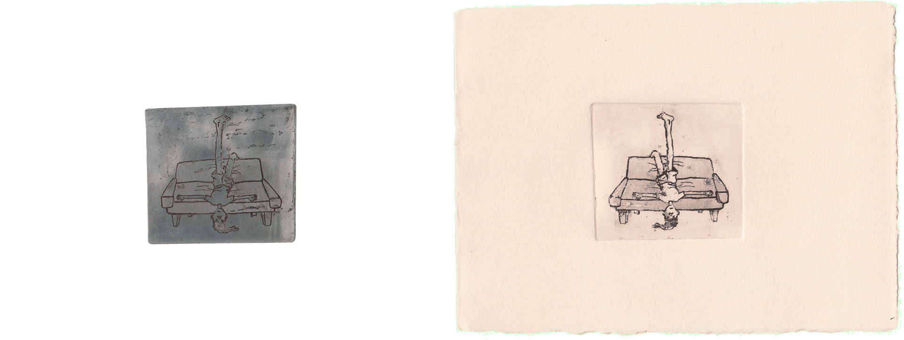
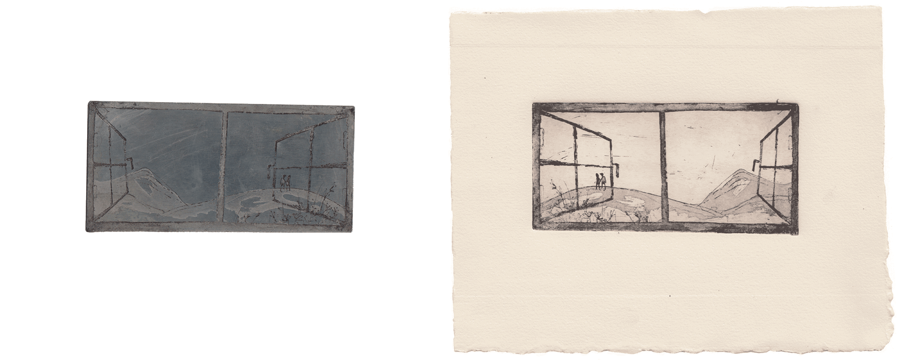
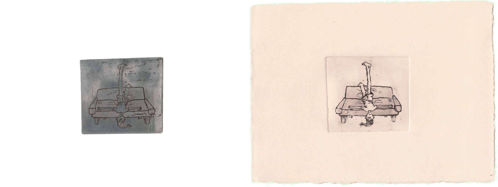
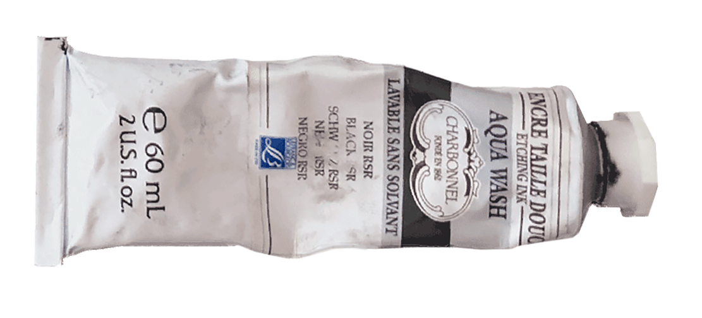

b fachada _ é pra meninos
impressão e calcografia,
fbaup 2021.

 




Neste projeto, fiz 10 ilustrações em chapas de zinco, utilizando gravura e água-tinta. O meu tema foram as 10 músicas do álbum "É para Meninos" de B Fachada, um álbum infantil, mas com um tom irónico e cómico que sempre gostei. Cada ilustração corresponde a uma música e a minha ideia seria que as gravuras pudessem ser incluídas no encarte do CD.
